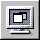

PATH
Documentation > WebObjects 4.5 >
Tools and Techniques
Launching Your Application
To launch your application:
-
Click 
in the toolbar to open the Launch panel.
-
Click
in the Launch panel to launch your application.
When you launch your application, your machine's web browser is launched by default and it accesses your application. To turn off this feature:
-
Click
to bring up the Launch Options panel.
-
Select Environment and Command-Line Arguments from the pop-up menus.
-
Enter
-browser OFF
as a command line option.
You can also launch your application directly from a command line. See Serving WebObjects for more information on command line options.
You can also launch your application by double-clicking its executable file. When you build your application, Project Builder creates an executable file (ProjectName
.exe
on Windows NT platforms) inside your application wrapper (.woa
) directory.
© 1999 Apple Computer, Inc. – (Last Updated July 27 99)